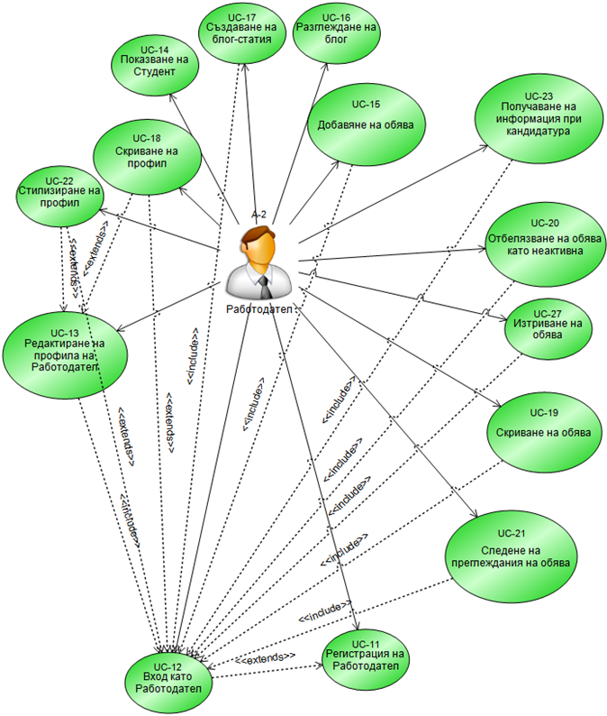
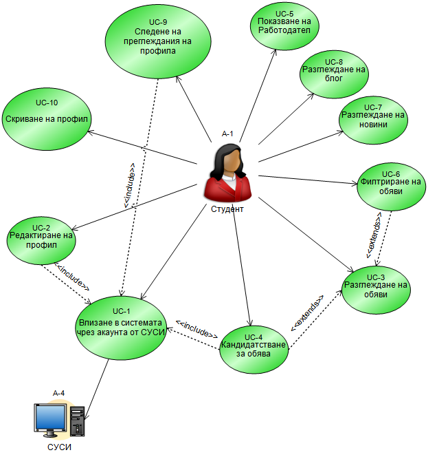
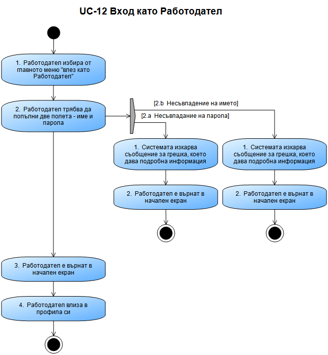

Приложени техники за извличане на изискванията
- Мозъчна атака (brainstorming)
- Интервюта
- Етнография
Интервютата!!!
Ирена
Галя
Емануела и Велина
Ивайло
Веселин
Анализ
Функционални изисквания
- Преди brainstorming
- Преди интервюта
- След интервюта
Нефункционални изисквания
- Производителност
- Безопасност
- Сигурност
Основни потребителски случаи Време е за диаграми


Диаграми на последователност

Добавяне на обява от работодател
Диаграми на активностите

Други модели на системата
Бъдещи насоки за развитие